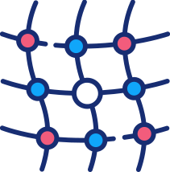
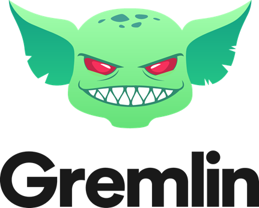

UD 5: IMPLANTACIÓN DE SISTEMAS SEGUROS DE DESPLEGADO DE SOFTWARE
8.- Herramientas de simulación de fallos.
La ingeniería del caos es una disciplina que se centra en experimentar sobre un sistema software en producción con el objeto de generar confianza en la capacidad del sistema para responder y hacer frente ante situaciones turbulentas e inesperadas.
Como consecuencia del enorme auge y expansión de los microservicios y las arquitecturas distribuidas en la nube, las aplicaciones software y sus requerimientos de seguridad se han vuelto cada vez más complejos.
Muchos son los beneficios que aporta la ingeniería del caos, a continuación se destacan algunos de los más importantes:
Reducción de las pérdidas económicas ocasionadas por la aparición de problemas críticos.
Contribuye a garantizar la calidad y alta disponibilidad de los servicios ofrecidos.
Ayuda a comprender mejor el funcionamiento de los propios sistemas y generar confianza.
Organizaciones tan populares como Netflix, LinkedIn o Facebook realizan ingeniería del caos con objeto de mejorar la comprensión de sus sistemas distribuidos. Esta resulta especialmente útil para encontrar nuevos problemas y corregirlos antes que fallos en sus sistemas afecten a sus usuarios y repercutan negativamente sobre la productividad y prestigio de la propia organización.
Debes conocer
Descripción textual alternativa
¿Qué es la ingeniería del caos? Vídeo educativo donde se muestran los conceptos básicos sobre la ingeniería del caoss y sus principios fundamentales. Se analizan la ventajas e inconvenientes que introduce el uso de la ingeniería del caos en los en el desarrollo y puesta en producción de los sistemas.
A continuación, se presentan algunas de las herramientas más populares utilizadas en la ingeniería del caos para simulación de fallos:
Simian Army
Es un conjunto de herramientas o “monos” desarrollado por el equipo técnico de Netflix para comprobar la salud y las medidas contra fallos de sus sistemas informáticos. Siempre hay un primer recluta, y ese fue Chaos Monkey, una herramienta que sabotea los servidores de producción de forma aleatoria, con la finalidad de que los equipos de mantenimiento no sean capaces de predecir cuándo y cómo tendrá lugar el sabotaje. Para utilizar Chaos Monkey es necesario instalar Spinnaker, la plataforma de entrega continua utilizada por Netflix.
Es un framework desarrollado en Python, se trata un proyecto cuya misión es proporcionar un kit de herramientas y una API gratuitos, abiertos y dirigidos por la comunidad a todas las diversas formas de herramientas de ingeniería del caos que la comunidad necesita.
Es un herramienta para la generación de caos de código abierto que mata pods en clúster de Kubernetes, periódicamente de forma aleatoria. Se pueden filtrar los pods de destino en Chaoskube usando espacios de nombres, etiquetas, anotaciones, ...
Es una herramienta de ingeniería del caos e inyección de fallos inspirada en Simian Army , pero que se integra con el proyecto de resiliencia Polly de .NET. Permite crear multitud políticas de inyección de caos a través de Polly: provoca excepciones, comportamientos inesperados en el sistema o añades latencias a la ejecución de los distintos procesos.
Es una plataforma de ingeniería del caos de código abierto que permite simular situaciones de caos en entornos de Kubernetes. Admite gran variedad de fallos: caídas en la ejecución de los pods, fallas de contenedor, fallas del sistema de archivos, errores en las transmisiones de red, alteraciones de tiempo en sistema y fallos del kernel.

Chaos Mesh (R). A Powerful Chaos Engineering Platform for Kubernetes(Todos los derechos reservados)
Gremlin
Es una herramienta comercial, disponible a través de una plataforma SaaS, o como ellos denominan FaaS (Failure as a Service), que permite experimentar en sobre gran variedad de sistemas, incluidos servidores baremetal, los proveedores de cloud, contenedores, kubernetes, e incluso servicios serverless. Permite inyectar multitud de fallos como: introducir, latencias, provocar la pérdida de tráfico de red, manipular la hora del sistema, apagar o reiniciar hosts y matar procesadores.

Gremlin Inc. Gremlin's Chaos Engineering platform(Todos los derechos reservados)
Ejercicio Resuelto
Como ya se ha visto el ejército de simios es un conjunto de herramientas introducidas por Netflix para producir ingeniería del caos y estudiar los efectos de los fallos sobre sus sistemas. Las herramientas se inspiran en el éxito de un “primer soldado” conocido como Chaos Monkey.
Hoy en día, el ejército de monos está compuesto por varios soldados, cada uno de ellos con una función muy específica. Investiga y describe cada una de las herramientas que componen el ejército de simios: Latency Monkey, Conformity Monkey, Security Monkey, Doctor Monkey, …
Para saber más
Descripción textual alternativa.
Vídeo introductorio a las posibilidades y características que ofrece Gremlin, un servicio para ejecutar Experimentos de Caos de forma segura, segura y sencilla sin interrupciones.
Mucha más información disponible sobre Gremlin en: